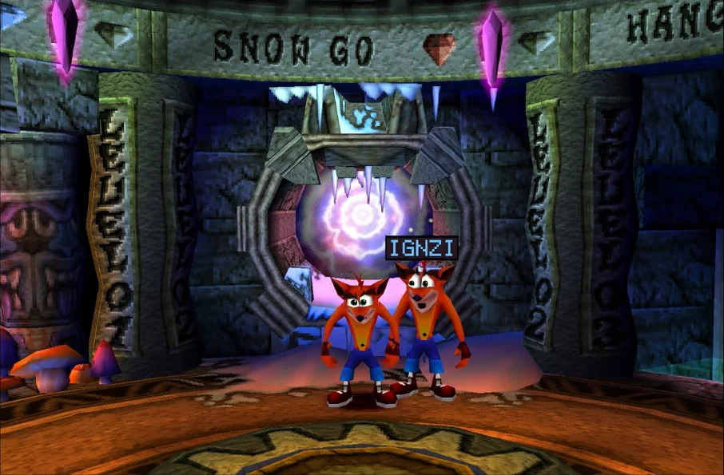
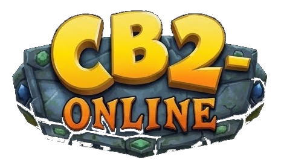
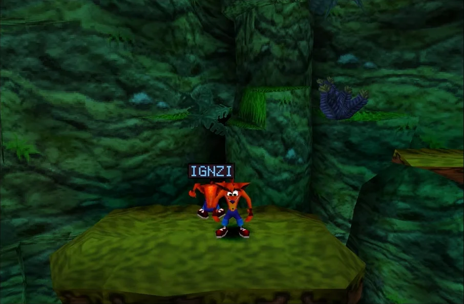
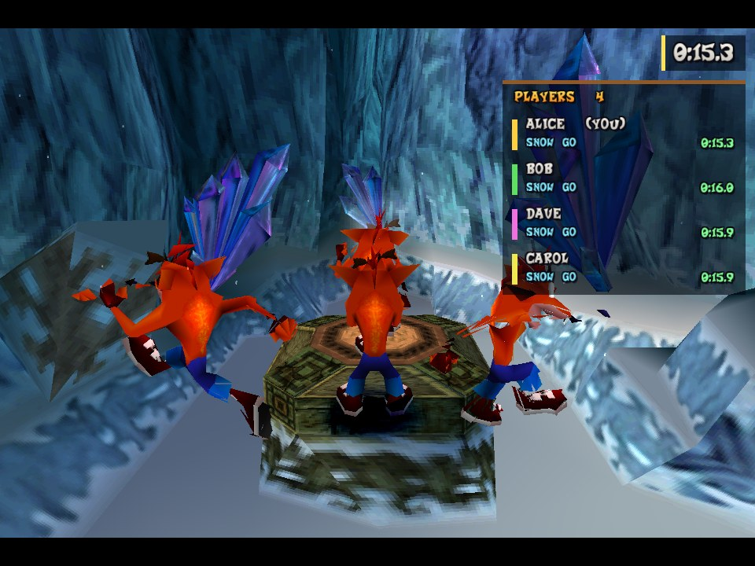
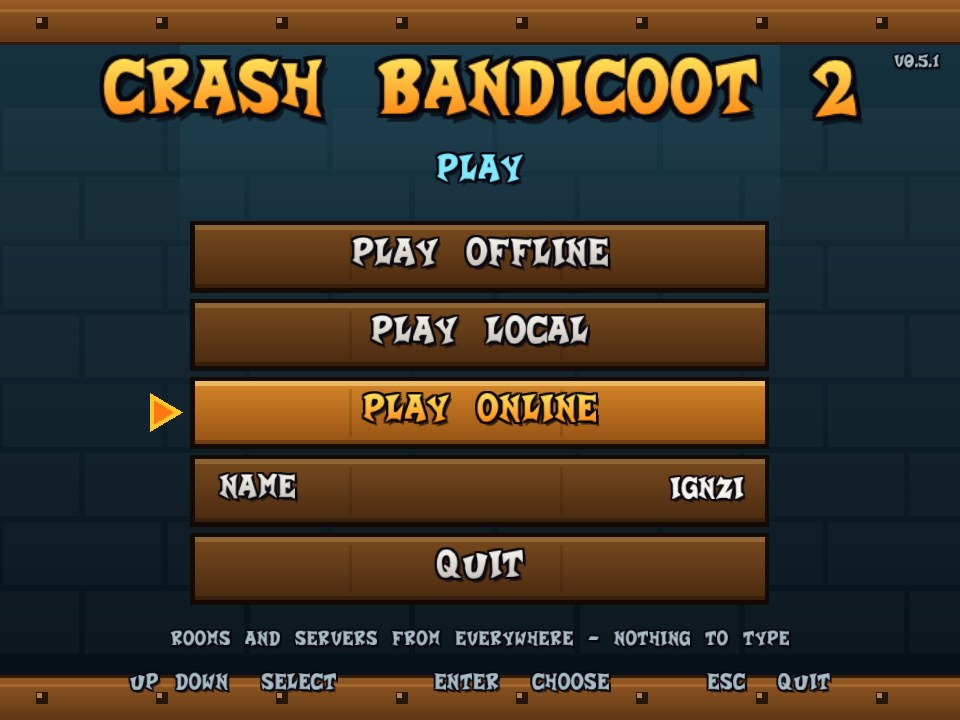
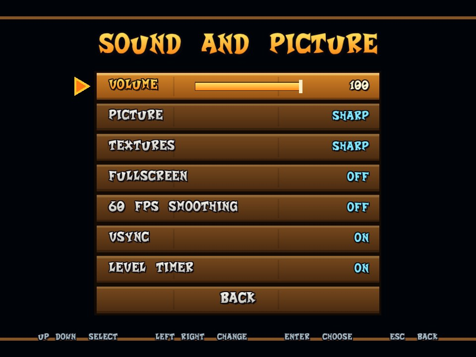
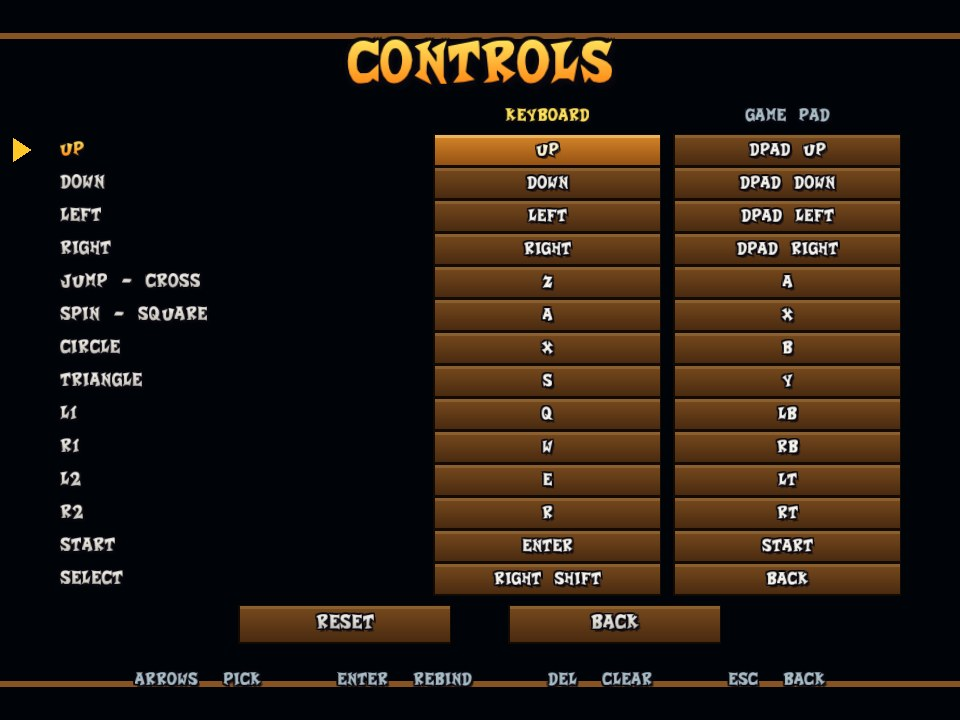
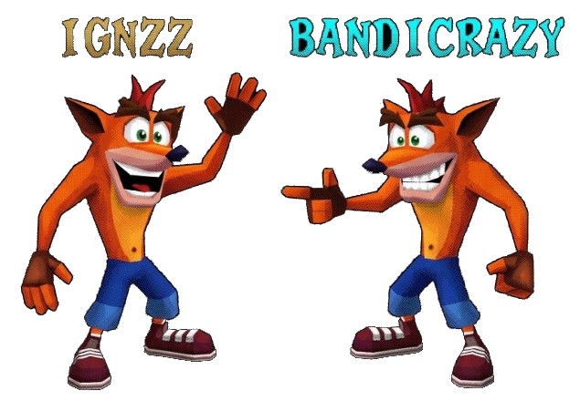
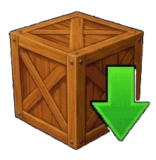
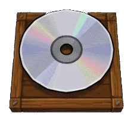

Watch on YouTube →

Play together online → Gameplay & screens



Explore screenshots →Free · Windows · fan project
Crash Bandicoot 2 on PC,
online together.
CB2-Online is a free PC port of the original PS1 Crash Bandicoot 2 with online multiplayer. Play level by level with your friends: everybody in your room shows up as an extra Crash, in real time, with a name tag. Built for racing and speedrunning.
You need your own copy of the game (European PAL or American NTSC-U disc image). Nothing from the game is included.
THE ADVENTURE, TOGETHER
Features
Online multiplayer

Play the original adventure alongside friends, see each other in real time, and race through levels together.
Original MIPS code
A C++ PC port runs the original game's MIPS code, with optional graphics and frame-rate improvements.
Online lobbies & servers
Find public rooms, create password-protected ones, or use a dedicated server. Play online or on your local network.
More features
Players appear with their animations and names, with no port forwarding needed to join a room. Level timers, personal records, shared best times and a live player list support speedrunning.
Optional 60 fps smoothing, high-refresh pacing, OpenGL upscaling, texture options and widescreen bring the game to modern PCs. The optional native world renderer is unstable and off by default.
Controller-supported menus, save states, fast forward, player opacity, automatic updates and bug reporting make playing easier.
YOUR JOURNEY STARTS HERE
Install guide
Unzip

Extract the download anywhere. There is no installer and nothing is written outside the folder.
Download for WindowsAdd your game

Start
Play.bat. The first time, it asks which release you have (European PAL or American NTSC-U), then for your own disc image of it (.cue/.binor.iso), and copies the files it needs.Join a room
Pick a name, choose Online, and enter a room name. Friends who enter the same room appear in your game.
Windows 10 or 11 with a graphics card that supports OpenGL 3.3. Esc opens the menu; F5/F9 save and load a state; F3 shows the player list; F4 the timer.
A LOOK INSIDE
Screenshots
READY TO PLAY?
Download
Latest version ...
Already installed? The game updates itself from its lobby. Nothing to download.
The program is not code-signed yet, so Windows Defender or SmartScreen may warn about it: see the FAQ. Read the privacy policy.
What's new
Loading the latest release...
The release list could not be loaded. Use the releases page instead.
THE NEXT LEVEL
Where this is going
Online play is only the start. The goal is a complete multiplayer Crash Bandicoot 2: the fastest way to race it, the best way to play it with friends, and a platform for new levels.
Fully speedrun multiplayer
Races with synchronised starts, live splits and standings, ghosts and public leaderboards: everything a speedrunner needs, with the whole room watching.
Co-op mode
Playing a level together as a team, with shared crates, enemies and checkpoints, not just seeing each other.
Level editor and custom levels
Build your own levels, play levels that are not on the disc, and share them with the room.
Skins
Pick how your Crash looks; everybody in the room sees it.
Freeroam
An open, free-exploration experience for everybody in the same world, without the game's progress rules.
Open and free
Everything stays free and open source. Donations pay for servers and for the time to build it; they unlock nothing in the game.
POWER THE PROJECT
Help build the milestones
CB2-Online is free and developed in spare time. Donations pay for servers and for the time to build the things below, from the speedrun multiplayer experience to co-op, skins, the level editor, custom levels and freeroam. The progress bars show where we are.
Raised so far: 0
Donation pages are being set up. Star the project and share it in the meantime.
Donations support the development of the open-source tools. Nothing is sold, no game content is included or offered, and donating does not unlock anything in the game.
NEED A HAND?
Questions
Is it legal? Do I get the game?
The project contains no game data. You need your own legally obtained copy of Crash Bandicoot 2; the program reads your files at run time. It is an independent fan project, not affiliated with or endorsed by Activision, Sony Interactive Entertainment or Naughty Dog. "Crash Bandicoot" is a trademark of its owners.
Which game version works?
Both the European release (PAL, SCES_009.67) and the North American release (NTSC-U, SCUS_941.54). Players of the two releases play in separate rooms. Other regions (Japan) are not supported yet.
Windows Defender or SmartScreen blocks the .exe
The program is new and not yet code signed, and these tools are cautious about unsigned programs that use the network. In the SmartScreen window choose More info, then Run anyway. If Defender quarantined the file, check that Get-FileHash Crash2.exe matches the SHA-256 shown next to the file on the GitHub release, restore it in Windows Security (Protection history) and allow it. The whole source code is public. Please report the detection name so it can be submitted to Microsoft as a false positive.
We cannot see each other (Kaspersky or another antivirus)
Some security programs, Kaspersky in particular, block a new program from using the network, so that player neither reaches the servers nor other players and nobody finds them. The waiting room shows a red notice after about ten seconds when that happens. Allow Crash2.exe: in Kaspersky open Settings → Protection → Firewall → Configure application rules, set Crash2.exe to Trusted, and add the game folder to Threats and exclusions (and Crash2.exe to the trusted applications). If its Network Attack Blocker reports an attack, exclude the game there too. Then restart the game. Menu names differ a little between versions; other antivirus suites have the same two settings, an application rule and an exclusion. Windows' own firewall asks once: answer yes for private and public networks.
How do I play with friends?
Everyone starts the game, chooses Online and types the same room name. Players on the same network find each other directly; over the internet they connect through a public rendezvous server, so no port forwarding is needed.
Do I collide with other players?
No. Other players are shown, not solid, so nobody can block or grief you. You can make them see-through with the opacity slider.
How does it run the original game?
It is a C++ PC port that runs the original game's MIPS code using its own implementation of the PlayStation hardware, OpenGL renderer and online layer. It is not a general-purpose emulator and only runs this game.
The game closed by itself.
Start it again: it notices and offers to open a bug report with the details filled in, and shows the folder with the files that help: crash-last.log, crash-last-session.log (what the game did before it ended) and crash-last.dmp. Zip them and drag the zip into the report. You can also use Esc → Report a bug at any time. Nothing is sent until you press Submit on the page that opens.
Where do I report problems or ideas?
On the issue tracker.